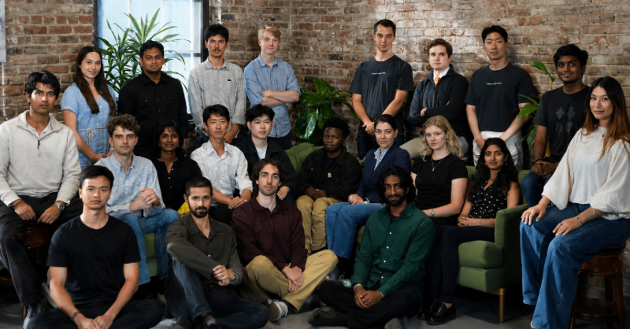

Executive Summary
AI 모델을 시험하는 회사에 4억 달러라는 값이 붙었습니다. Vals AI가 8월 13일 a16z 주도로 4,000만 달러 시리즈A를 마감했습니다. 이 회사가 파는 것은 모델도, 모델을 학습시킬 데이터도 아닙니다. 법률과 금융, 헬스케어, 코딩 현장의 실제 업무를 옮겨 담은 시험지와 그 답안을 전문가 기준으로 채점하는 장치입니다.
값이 매겨진 배경에는 공개 벤치마크의 신뢰 붕괴가 있습니다. ETH 취리히와 스탠퍼드 연구진이 널리 쓰이는 언어모델 벤치마크 60개를 분석했더니 29개에서 상위 모델 간 변별력이 사라져 있었습니다. 흥미로운 대목은 처방 쪽입니다. 같은 논문은 업계가 해법으로 내세워 온 비공개 테스트셋이 포화를 막지 못했다고 보고했습니다. 버틴 것은 전문가가 직접 만든 문항이었습니다.
그래서 이 투자는 벤치마크 하나의 성공담이 아니라, 채점표를 계속 새로 만드는 일에 값이 매겨졌다는 신호에 가깝습니다. 사내에 에이전트를 들이는 조직에게는 질문 하나로 번역됩니다. 벤더 리더보드 말고, 우리 업무로 만든 시험지가 우리에게 있습니까.
주요 수치
출처: a16z (2026-08-13), arXiv:2602.16763 §5, Tech Times (2026-08-14)
4억 달러
Vals AI 기업가치
유치 금액은 4,000만 달러이고, 기업가치와는 다른 수치입니다
60개 중 29개
변별력을 잃은 공개 벤치마크
고포화 이상 판정을 받은 수이며, 그중 14개는 초고포화 구간에 들어가 있습니다
52%
금융 실무 과제 최고 정확도
2026년 5월 Finance Agent v2 기준으로, 애널리스트 과제의 절반가량은 여전히 실패했습니다
8배
2025년 매출 성장
같은 기간 고객 수는 두 배가 됐고, 팀 규모는 최근 6개월 사이 세 배가 됐습니다
실무를 시험지로 옮긴 회사
이 회사가 다른 벤치마크와 갈리는 지점은 문항을 누가 쓰느냐입니다. Vals AI는 변호사와 재무 분석가, 소프트웨어 엔지니어, 의료 전문가와 함께 각자의 실제 업무 절차를 벤치마크로 옮기고, 그 결과물을 전문가 수준의 기준으로 채점하는 자동 시스템을 붙입니다. 법률 모델이 변호사 시험에 붙는지가 아니라 법률 조사를 실제로 수행하는지를 묻고, 금융에서는 복잡한 문서를 분석해 내는지를, 코딩에서는 돌아가는 애플리케이션을 만들어 내는지를 봅니다.

차이는 채점 대상의 모양에서 가장 크게 드러납니다. 일반적인 벤치마크는 객관식에서 정답을 고르거나 특정 문자열을 뱉어내는지를 확인합니다. Vals의 과제는 여러 단계로 이어진 분석 작업입니다. 필요한 근거 자료를 찾아오고, 숫자를 지어내지 않고 종합하고, 맥락을 잃지 않은 채 추론을 이어 가야 합니다. 금융 쪽 대표 벤치마크인 Finance Agent v2는 동종기업 상대가치 모델을 세우고 섹터 촉매를 종합해 투자 의견을 만들어 내는 과제로 구성돼 있습니다. 2026년 5월 기준 최고 모델의 정확도가 52%였습니다. 리더보드 상단에 있는 모델도 전문 애널리스트 과제의 절반쯤은 제대로 끝내지 못했다는 뜻입니다.
채점표를 쥐는 방식도 정해져 있습니다. 회사는 벤치마크마다 데이터를 세 겹으로 나눠 둡니다. 발표하는 점수는 항상 비공개로 두는 테스트셋에서만 나오고, 어떤 종류의 문항을 쓰는지 보여 주기 위한 공개 검증셋이 따로 있으며, 그보다 큰 비공개 검증셋은 기업에 라이선스로 내줍니다. 마지막 층에는 조건이 붙어 있습니다. 라이선스로 나간 검증셋의 결과가 자사 테스트셋 결과와 상관관계를 갖는다는 것을 회사가 통계로 증명해 줍니다. 기업이 사내에서 같은 잣대를 다시 써 볼 수 있게 만든 층이고, 이 글 마지막의 질문과도 이어집니다.
운영 속도도 이 회사가 파는 것의 일부입니다. 모델 접근 권한을 받은 뒤 몇 시간 안에 벤치마크 결과가 나옵니다. 프론티어 모델이 주 단위로 쏟아지는 지금의 출시 주기에서, 결과가 몇 주 뒤에 나오는 평가는 이미 지난 모델의 성적표가 됩니다. 이렇게 쌓인 결과는 OpenAI와 앤트로픽, 구글, 메타, xAI의 모델 카드에 인용돼 있습니다. 프론티어 랩이 자사 공식 문서에 외부 평가기관의 수치를 적어 넣는다는 것은, 자기가 쌓아 온 신뢰의 일부를 그 방법론에 나눠 준다는 뜻입니다.
8월 13일 마감된 시리즈A는 4,000만 달러이고 기업가치는 4억 달러입니다. a16z가 라운드를 이끌었고 기존 투자자인 8VC와 Pear VC, 블룸버그 베타가 다시 들어왔으며, 허드슨 리버 트레이딩의 벤처 부문인 HRT Ventures와 Next Ladder Ventures가 새로 합류했습니다. 창업자는 CEO 라얀 크리슈난과 CTO 랭스턴 나숄드입니다. 스탠퍼드 컴퓨터과학과 동문이고 창업 전부터 실측 문제를 함께 다뤄 왔으며, 크리슈난은 팔란티어를, 나숄드는 메타와 엔비디아, 허드슨 리버 트레이딩을 거쳤습니다.
라운드와 함께 세 가지 제품이 공개됐습니다. 사내 깃허브 저장소를 그대로 코딩 벤치마크로 바꿔 주는 Vals Smith, 사이버보안과 정신건강, AI 안전을 다루는 프론티어 리스크 벤치마크, 금융과 코딩에 몰려 있던 지수를 경제 전반으로 넓힌 Vals Index 2.0입니다. 제품 목록보다 먼저 읽어 둘 것은 창업자가 발표문 첫머리에 적은 전제입니다. 지능을 만드는 데는 수조 달러가 들어갔지만 그것을 재는 일에 들어간 돈은 그에 비해 훨씬 적었다는 것입니다.
공개 시험지는 늙는다
벤치마크가 왜 못 믿을 것이 됐는지는 이 블로그에서도 여러 차례 다뤘습니다. 시험 문항이 학습 코퍼스로 흘러 들어가 모델이 이미 본 문제를 푸는 오염 문제가 한 축이고, OpenAI가 스스로 쓰던 코딩 벤치마크를 폐기한 사건이 다른 한 축입니다. 이번에 달라진 것은 그 메커니즘이 아니라, 같은 문제가 값이 매겨지는 사업이 됐다는 쪽입니다.
규모를 재 본 연구는 2026년 2월에 나왔습니다. ETH 취리히와 스탠퍼드 연구진이 널리 쓰이는 언어모델 벤치마크 60개를 포화와 관련된 14가지 속성으로 분석했고, 그중 29개가 고포화 이상, 14개가 초고포화 판정을 받았습니다. 포화란 최상위 모델들의 점수가 측정 잡음 안으로 압축돼 서로 구분되지 않는 상태를 말합니다. 이 논문은 8월에 ICML 2026 게재 버전으로 갱신됐습니다.
포화는 오염만으로 생기지 않습니다. 문항이 한 줄도 새어 나가지 않아도, 랩들이 이미 알려진 지표에 맞춰 모델을 다듬는 것만으로 상위권 점수는 서로 붙습니다. a16z가 투자 발표문에서 공개 데이터셋의 문제를 포화와 학습 데이터 유출, 그리고 모델이 대놓고 겨냥하는 최적화 표적이라는 세 갈래로 적어 둔 이유입니다.
포화된 벤치마크는 틀린 답을 주지 않습니다. 아무 답도 주지 않습니다. 상위 세 모델이 통계적으로 구분되지 않는 리더보드는, 어느 모델이 우리 업무를 더 잘할지에 대해 구매자에게 알려 주는 바가 없습니다. a16z가 투자 발표문에서 쓴 표현을 빌리면, 모델은 리더보드에서 훌륭해 보이면서도 실제로 중요한 여러 단계의 지저분한 일 앞에서는 여전히 헤맬 수 있습니다.
비공개는 방어선이 아니었다
평가 회사들이 오염 문제에 내놓는 답은 대체로 같습니다. 문항을 공개하지 않는 것입니다. Vals도 테스트셋을 비공개로 두고 실행 횟수를 제한해 오염과 어뷰징을 막는다고 설명합니다. 그런데 앞의 논문은 바로 그 처방을 정면으로 겨눕니다. 비공개 테스트셋이나 폐쇄형 답안 형식처럼 흔히 안전장치로 여겨지는 설계는 포화에 미치는 영향이 제한적이었고, 포화를 강하게 예측한 변수는 벤치마크의 나이와 규모였습니다. 문항이 한 번도 공개된 적 없더라도, 그 벤치마크가 무엇을 어떻게 묻는지가 널리 알려지는 순간 점수는 압축되기 시작합니다.
논문이 부정한 것은 비공개의 쓸모 전체가 아닙니다. 오염과 암기는 그 자체로 잘 문서화된 위험이고 비공개는 거기에는 듣습니다. 다만 포화를 막아 주는 방패로는 작동하지 않았습니다.
저항력을 만든 것은 다른 조건이었습니다. 논문의 결론은 포화에 대한 저항력이 전문가 큐레이션에서 오지 공개 여부에서 오지 않는다는 것이고, 실무적 권고는 벤치마크 생애주기 관리로 이어집니다. 포화를 모니터링하고, 불확실성을 함께 보고하고, 은퇴와 개정의 기준을 미리 정해 두라는 것입니다.
Vals가 실제로 하는 일은 이 권고에 가깝습니다. 이 회사는 벤치마크를 소모품으로 취급합니다. 좋은 벤치마크는 언젠가 쓸모없어지게 돼 있고, 모든 모델이 만점에 가까워지면 그 시험지는 임무를 마친 것이므로 더 어려운 것을 만들 때라는 것이 회사의 설명입니다. 2026년 5월 기업금융 벤치마크 CorpFin이 모델 간 변별력을 잃자 엑셀 모델링 벤치마크로 교체한 것이 그 사례입니다. 회사의 공개 벤치마크 목록에는 지금도 은퇴한 벤치마크가 별도로 표시돼 남아 있습니다. 논문이 함께 권한 불확실성 보고도 방법론 문서에 들어가 있습니다. 점수 옆에 표준오차를 같이 싣고, 여러 번 돌리는 벤치마크는 회차 사이의 편차로 오차를 계산한다고 밝혀 두었습니다.
그래서 무엇에 값이 붙었는지를 조금 고쳐 잡을 필요가 있습니다. 값이 붙은 것은 문항을 감춰 두었다는 사실이 아닙니다. 도메인 전문가를 데려와 실무를 문항으로 옮기는 능력, 포화된 시험지를 스스로 버리고 다시 만드는 운영, 그리고 다섯 곳의 프론티어 랩이 모델 카드에 이름을 적어 줄 만큼 쌓인 신뢰 이력입니다. 여섯 달 전에 시작한 신규 진입자가 자금만으로 복제하기 어려운 쪽은 문항이 아니라 이 이력입니다.
왜 지금 채점자에 값이 붙는가
판이 커진 만큼 잘못 고른 대가도 커졌습니다. 모델은 질문에 답하는 일에서 일을 해내는 일로 옮겨 가는 중이고, 에이전트는 몇 시간에서 며칠까지 혼자 돌아갑니다. 이 구간에서 모델을 잘못 고르면 청구서는 토큰 값으로만 오지 않습니다. 시간과 고객 만족이 함께 빠져나갑니다. a16z가 이 회사를 모델과 그 모델에 기대는 사람들 사이의 신뢰 층이라고 부른 배경입니다.
a16z의 논리는 단순합니다. 파는 쪽이 사는 쪽보다 정보를 훨씬 많이 쥐고 있고 자신을 유리하게 보일 유인까지 갖고 있다면, 그 시장은 결국 독립적인 채점자를 필요로 한다는 것입니다. 제너럴 파트너 제니퍼 리는 신용시장의 무디스와 S&P, 상장기업의 독립 감사인, 제조업의 UL 인증을 같은 계보로 들었습니다. 1970년 조지 애컬로프가 중고차 시장으로 설명한 정보 비대칭이 AI 모델 시장에서 반복되고 있다는 진단입니다. 랩은 자기 모델의 진짜 강약점을 구매 기업보다 잘 알고, 자기가 잘 나오는 벤치마크를 골라 발표할 수 있습니다.
비유는 양쪽으로 작동합니다. 무디스는 2008년에 크게 실패했고, 그 원인의 하나는 자신이 등급을 매기는 채권 발행사와 맺고 있던 상업적 관계였습니다. Vals의 수익 구조는 평가 서비스 자체에 과금하는 방식이라 발행사에게 수수료를 받는 신용평가사보다 회계감사에 가깝습니다. 다만 회사가 커지고 랩들과의 관계가 깊어져도 그 구분이 유지될지는 지켜볼 문제입니다. 공동창업자가 몸담았던 허드슨 리버 트레이딩이 이번 라운드의 신규 투자자이기도 하다는 사실은, 이 생태계가 아직 좁다는 것을 보여 줍니다.
평가에 값이 매겨진 사례는 이번이 처음도 아닙니다. 다만 각 회사가 묻는 질문이 서로 다르다는 점이 중요합니다. 아래 표는 최근 자금을 받은 세 회사가 무엇을 재고 누가 채점하는지를 정리한 것입니다. 값이 다시 매겨지는 속도도 눈에 띕니다. LMArena는 2025년 5월 시드 라운드에서 6억 달러였던 기업가치를 일곱 달 만에 17억 달러로 올렸고, 2025년 12월 기준 연환산 매출은 3,000만 달러였습니다.

| 회사 | 무엇을 묻는가 | 채점자 | 최근 라운드 |
|---|---|---|---|
| Vals AI | 법률·금융·코딩 실무 과제를 끝까지 해내는가 | 도메인 전문가 기준의 자동 채점 | 2026년 8월 시리즈A 4,000만 달러, 기업가치 4억 달러 |
| LMArena | 사람들이 어느 모델과의 대화를 더 좋아하는가 | 익명 사용자 선호 투표 | 2026년 1월 시리즈A 1억 5,000만 달러, 기업가치 17억 달러 |
| Trismik | 같은 판정을 더 적은 문항으로 낼 수 있는가 | 문항반응이론 기반 적응형 시험 | 2025년 9월 프리시드 220만 파운드 |
정리: 페블러스. a16z 발표와 TechCrunch(2026-01-06), Tech Times(2026-08-14) 보도를 옮겼습니다. LMArena는 월 500만 명 이상이 쓰며 월 6,000만 건의 대화가 리더보드로 흘러듭니다.
세 회사의 라운드를 나란히 놓으면 한 가지가 분명해집니다. 값이 붙은 대상은 모델의 성능이 아니라 성능을 판정하는 장치입니다. 그리고 그 장치는 한 번 만들어 파는 콘텐츠가 아니라, 모델이 좋아질 때마다 다시 만들어야 하는 인프라입니다.
우리 시험지는 누가 만드는가
독립 평가기관이 생기는 것은 구매자에게 좋은 일입니다. 벤더가 발표한 점수만 보고 판단해 온 조직에게, 이해관계가 다른 제3자의 숫자가 하나 더 생기기 때문입니다. 다만 그 숫자가 대신해 주지 못하는 것이 있습니다. Tech Times의 표현을 빌리면, Vals를 포함한 어떤 일반 벤치마크도 조직 고유의 데이터와 업무 절차 위에서 모델을 시험해 보는 일을 대체하지 못합니다. 독립 평가가 세워 주는 것은 믿을 만한 하한선입니다. 실무 과제 벤치마크에서 안정적인 점수를 내지 못하는 모델이라면, 벤더 리더보드의 숫자는 그 모델을 믿을 이유가 되지 못합니다.
그러면 그 선 위에서 우리 자리를 재는 일이 남습니다. 사내에 에이전트를 들이는 조직이라면 다음 세 가지를 점검할 수 있습니다.
- 우리 업무로 만든 과제가 있습니까. 벤더가 보여 준 데모나 공개 벤치마크 점수 말고, 우리 문서와 우리 절차로 구성한 과제가 몇 개인지부터 세어 볼 수 있습니다.
- 채점 기준을 누가 정했습니까. 실무를 아는 사람이 정답과 감점 기준을 적어 두지 않으면, 자동 채점기는 그럴듯한 답에 후한 점수를 줍니다. 기준을 만드는 일이 문항을 만드는 일보다 오래 걸립니다.
- 그 시험지의 유효기간을 정해 두었습니까. 도입한 모델들이 전부 만점에 가까워지면 그 시험지는 더 이상 아무것도 알려 주지 않습니다. 언제 은퇴시키고 무엇으로 갈아 끼울지를 미리 정해 두는 편이 낫습니다.
세 질문 가운데 일부는 밖에서 사 올 수도 있습니다. 이번에 정식 공개된 Vals Smith는 깃허브 저장소를 넣으면 그 저장소에 맞춘 코딩 벤치마크를 만들어 주고, 앞서 본 비공개 검증셋은 기업이 사내 검증에 쓰라고 라이선스로 나갑니다. Tech Times가 정리한 대로, 이 모델이 파이썬을 쓸 줄 아느냐와 우리 파이썬을 쓸 줄 아느냐는 다른 질문이기 때문입니다. 다만 무엇을 정답으로 두고 어디서 감점할지는 여전히 조직 안에서 정해야 합니다. 도구는 문항을 대신 만들어 주지만 기준까지 대신 정해 주지는 않습니다.
Editor's Note: 페블러스가 데이터 품질 현장에서 반복해 만나는 장면도 여기에 가깝습니다. 모델을 바꾸는 일보다 무엇을 정답으로 둘지 합의하는 일이 오래 걸리고, 그 합의가 없는 상태에서 쌓인 점수는 나중에 다시 쓰기 어렵습니다. 실무 과제와 채점 기준은 한 번 만들어 두면 모델이 바뀌어도 남는 자산입니다.
같은 축의 이전 글로는 시험 문항이 학습 데이터로 새어 들어가는 문제를 다룬 벤치마크 오염, 벤치마크 하나가 은퇴하는 과정을 본 SWE-bench Verified 폐기, 사내 파일럿이 프로덕션으로 넘어가지 못하는 이유를 살핀 AI 파일럿 실패가 있습니다. 투자 발표 원문은 a16z에서, 포화 연구는 arXiv:2602.16763에서 볼 수 있습니다.